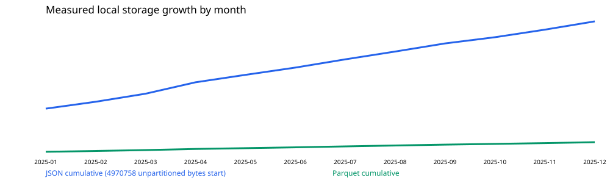

NOT_FULLY_VALIDATED · NO_FOLLOW. Real vendor input, partial candidate-price universe; 2026H1 not accessed before freeze.
Training sessions: 243; calendar/event days: 243/243; private snapshot SHA256: 438accbad744d668b5b91fffd8b49822a4cec6b6d4f047fb3d16d244087c4e61.
Measured local disk: 19,077,530 bytes (18.19375 MiB), month JSON 12,712,775 bytes, normalized Parquet 1,393,997 bytes (ratio 0.109653), legacy duplicate annual cache 0 bytes. R2: NOT_CONNECTED / null.
| Version | Return % | MDD % | Trades | Fees CNY | Cash days | Decision |
|---|---|---|---|---|---|---|
| V0_SIMPLE_STREAK | -76.9218 | -78.0509 | 65 | 767.17637 | 163 | KEEP_AS_REFERENCE |
| V1_MARKET_STATE_GATE | -80.612 | -81.2785 | 52 | 598.19839 | 178 | REJECT |
| V2_BREAK_FEEDBACK_VETO | -60.7934 | -62.3941 | 48 | 601.34426 | 187 | REJECT |

市场心理仅以供应商涨跌停/炸板、延续、强转弱/修复行为做代理；特征在源日期收盘后形成，只可能用于下一交易日，供应商实际发布时间未认证。板块主线/容量核心没有完整历史标签，标记 UNKNOWN。

Monthly source/format coverage CSV · Measured inventory and partition hashes
Selection frozen as NO_CANDIDATE before 2026H1 retrieval. Validation may be reported INSUFFICIENT if source/execution gates fail.